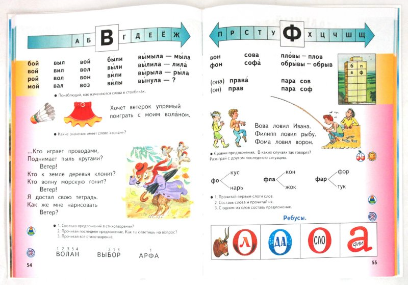
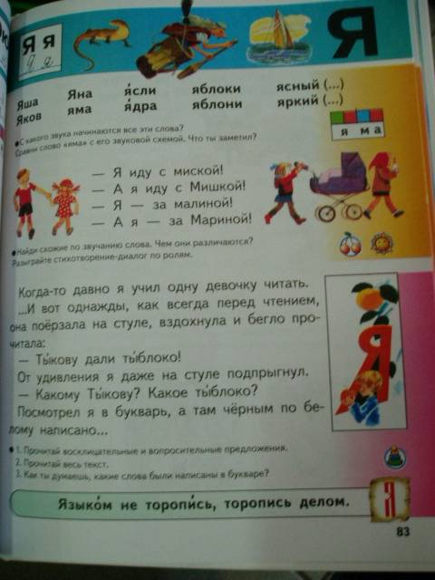
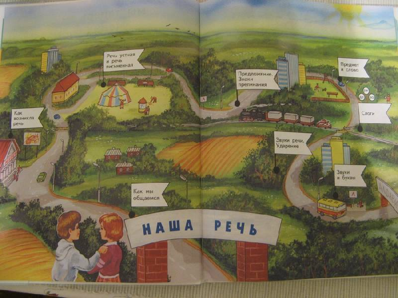
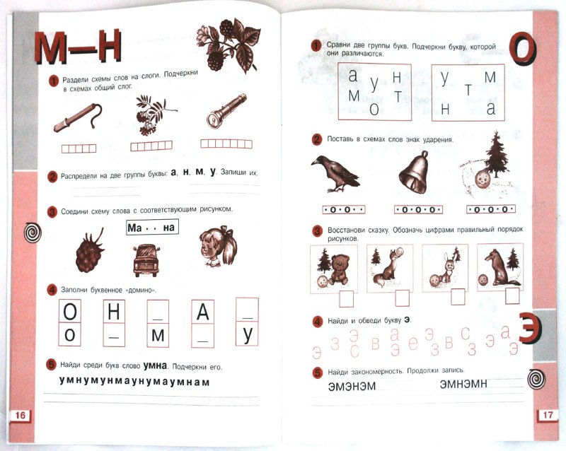

Впечатления от букваря и рабочей тетради двойственные.
Содержание букваря неплохое с точки зрения заданий и текстов. Оформление, конечно, ужасное, хотя бывают учебники и с более худшими художествами. В букваре есть только задания, которые нужно выполнять на уроке. В букваре отсутсвуют какие-либо правила. Не обнаружено заданий для самостоятельной работы.
Букварь

Оформление: не обозначены места начала блока с заданием. Мерзкие розовые градиенты на границах листов.
Содержание: в некоторых заданиях отсутсвует описание, что нужно сделать. Ребенку неясно, что нужно делать со словами ВОЛАН, ВЫБОР, АРФА, задание отсутсвует.
Оформление и верстка заставляют рыдать:

Человек, учащийся по такому учебнику, будет лишен понимания красоты. Люди, отвечающие за оформление - некомпетентные бездари, работающие за еду.
Лабиринты сознания:

Что хотел сказать автор? Зачем мальчик ухватил девочку за плечо? Что означают эти причудливые дороги?
Рабочая тетрадь
Возникают вопросы:

Зачем в качестве первого слова на странице выбрано слово "плеть"?
Впечатления от оформления удручающие.